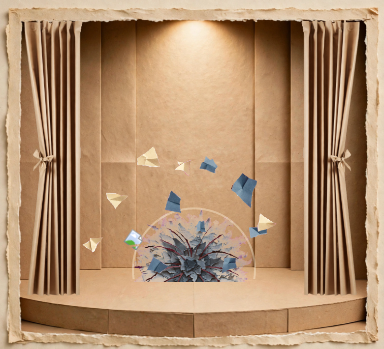
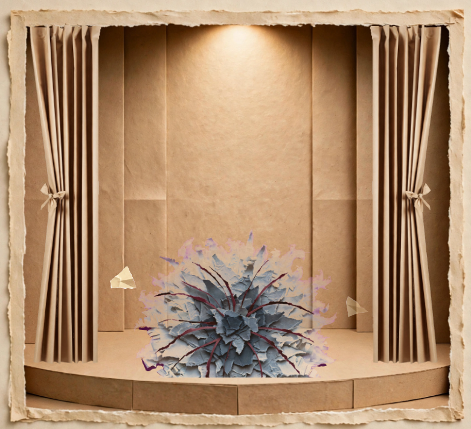
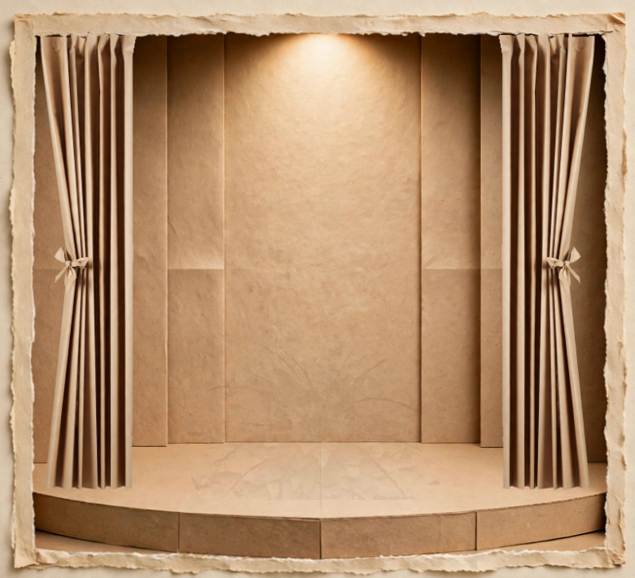
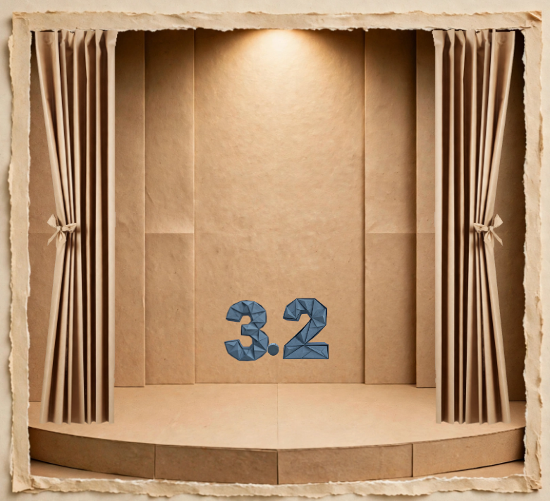
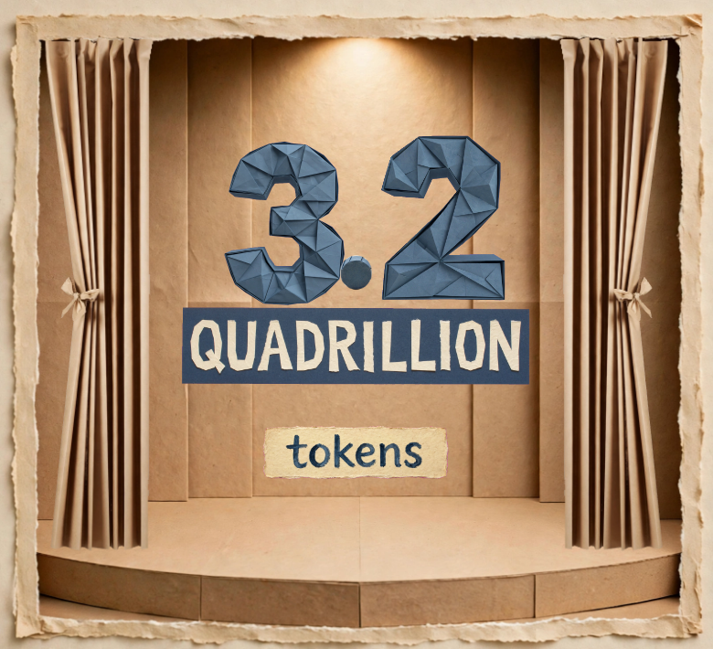

Quadrillion · Unit 1 · Cycle 1 of the approved re-block (Option B timing, physics-sheet values). Nine frames, in event order — the contract Cycle 2 builds the stage against. Tap NEXT, or swipe.
FRAME 1 / 9
0.30 s · FRAME 1
THE BALL, SMALL, SITTING
Ball Ø 0.100 m = 24 px (scale: 240 px = 1 m). v = 0, a = 0 — static equilibrium until the burst at 0.60 s. The boxes rest on the platform; contact shadows under box and ball.
0.60 s · FRAME 2
THE BURST — AT THE SMALL SIZE
The ball does not grow first; it bursts at its sitting size. Flash τ = 0.045 s; the ring is the blast front itself: Sedov r = 32 px at +0.05 s.

0.85 s · FRAME 3
SHARDS IN FLIGHT — SMOKE GROWING BEHIND THEM
Shards: projectile + quadratic drag, k = 0.270 m⁻¹, speeds to 3.2 m/s — they never stop or stand. Smoke front r = C·t^2/5 = 61 px at +0.25 s. The blast has thrown the boxes clear.

1.15 s · FRAME 4
SMOKE AT FULL EXPANSION — SHARDS GOING, OR GONE
R_max = 0.350 m = 84 px radius at +0.55 s; front speed fallen to 61 px/s. The last shard resolves by 1.286 s; nothing of the ball remains standing.

1.30 s · FRAME 5
SMOKE THINNING — NEARLY GONE
Dilution ≈ 0.07 at this frame; the radius no longer grows. True zero at 1.473 s — before any digit exists. The ball is gone since the burst; the shards all resolved by 1.286 s; the boxes thrown clear, out of frame.

1.60 s · FRAME 6
“3.2” BORN AT THE BURST POINT
Born where the ball burst, at the ball's scale class — not at its final seat. Spring ζ = 0.55, ω = 9.6 rad/s → scale 0.48 at +0.10 s; settled by 2.258 s, inside its word.

3.40 s · FRAME 7
THE CLAIM STANDING — TOKENS AT THE BOTTOM OF QUADRILLION
Digits settled at their seat; the band fell 18 px and settled at 2.760 s. TOKENS dropped from behind the band: settle spring ζ = 0.60, ω = 24 rad/s → settled 3.380 s.
3.95 s · FRAME 8
THE STAMP LANDED — THE PROCESSED SEAL BORN
The fall height is derived, not picked: H = g·t²/2 = 136 px for a 0.34 s fall. Impact — and the seal's birth — at 3.780 s at 800 px/s; squash settled 3.934 s. The seal stands complete; the stamp rests on its top edge.
4.40 s · FRAME 9
EVERY MONTH — THE PAGE FLIPPED, BESIDE THE SEAL
A free page cannot flip this slowly (proven in the sheet), so: driven to edge-on at 4.190 s, then the free pendulum — flat at 4.379 s. Calendar beside the seal: both complete, touching nothing.
What this strip fixes
The ball's size: Ø 24 px — the plan's “about a quarter of the current size,” and the real 100 mm sphere at 240 px = 1 m.
The burst lives at the ball — low, at the platform's centre. The smoke is a surface burst: its dome rests on the platform.
Boxes grounded in Frames 1–2, gone from Frame 3 — the blast throws them clear.
The seal's seat moved down onto the platform, so the landed stamp rests on its top edge and covers nothing.
TOKENS stays — the claim builds cumulatively: digits, band, TOKENS, seal, calendar all stand together at the end.
One ground line for everything that stands (the platform's surface line), each with a contact shadow.
The Cycle 1 gate: final round — timing auditor PASS on every frame · frame viewer PASS 9/9 (containment + occlusion census: nothing crossing, hidden, or floating). This strip is the contract Cycle 2 builds against.
What these are: plan frames — stills composed from the stage's own asset family, re-seated and re-scaled to the approved plan and the calculated physics. Not frames of the film, not a render. The stage itself moves in Cycle 2, against this strip.